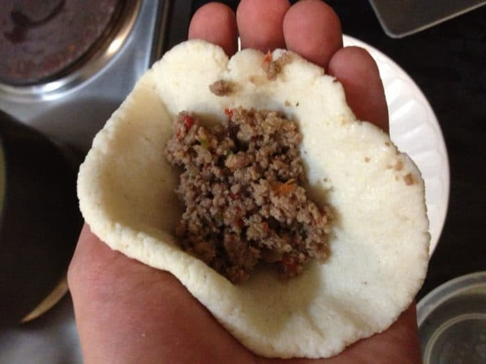

Bollos Pelones (Venezuela)
Bollos Pelones, comida venezuelana
Os pelones de Bolones são um prato típico venezuelano muito popular, tanto por sua simplicidade quanto por seu sabor requintado. É consumido em todo o país. feito com massa de milho, sua preparação mais frequente é com recheio de carne, seu tamanho é como uma laranja, é servido em molho de tomate e é comum acompanhá-los com arroz.
Ingredientes
Ingredientes para o ensolado
Ingredientes para o molho
Ingredientes para a massa
Ingredientes para o ensolado
2 colheres de sopa de óleo de milho
1/2 xícara de cebola picada
1 dente de alho picado
1/4 xícara de pimentão picado
250 g de carne moída
1/2 xícara de tomate sem casca ou sementes picadas
6 azeitonas verdes picadas
2 colheres de chá de alcaparras
2 colheres de sopa de passas pretas
4 colheres de sopa de vinho doce para cozinhar
1/4 de xícara de caldo
1 colher de chá de sal
1 pitada de pimenta
Ingredientes para o molho
2 xícaras de cebola picada
2 dentes de alho
5 xícaras de tomate picado
2 colheres de manteiga
Sal e pimenta
Ingredientes para a massa
2 e 1/4 xícaras de água
1 pitada de sal
2 xícaras de fubá
2 gemas
Preparação

Prepare o ensopado
Prepare o molho
Prepare a massa
Forme os bollos
Cozinhar os bollos pelones
Prepare o ensopado
Aqueça o óleo de milho em uma panela e refogue a cebola até ficar transparente.
Adicione o alho e o pimentão picado e cozinhe por cinco minutos.
Adicione a carne moída e cozinhe por mais cinco minutos.
Adicione o tomate picado e depois as azeitonas, alcaparras, passas, vinho e caldo.
Ajuste o sal e a pimenta.
Deixe cozinhar por 10 minutos ou até secar um pouco.
Retire do fogo.
Prepare o molho
Misture a cebola, alho e tomate.
Aqueça a manteiga em uma panela e leve esse molho para a panela.
Cozinhe até engrossar um pouco.
Ajuste o sal e a pimenta.
Prepare a massa
Misture a água morna com o sal e adicione os copos de farinha de milho.
Deixe descansar um pouco e depois amasse até obter uma massa lisa.
adicione as gemas.
Forme os bollos
Enrole a massa em uma bola e faça um buraco com o dedo grande o suficiente para preenchê-la.
Insira duas colheres de chá do ensopado e feche cada bola, juntando a massa com os dedos.
Se necessário, adicione um pouco mais de massa para fechá-las bem.
Repita a operação até que toda a massa seja usada.
Cozinhar os bollos pelones
Despeje a água em uma panela e deixe ferver.
Abaixe o fogo e coloque os pãezinhos na água quente, sem ferver.
Cozinhe por dez minutos.
Eles estarão prontos quando os pães felpudos flutuarem.
Retire-os da água, transfira-os para o caldeirão e cubra-os com o molho.
Cozinhe-os um pouco mais.
VIDEO
Veja o conteúdo aqui.